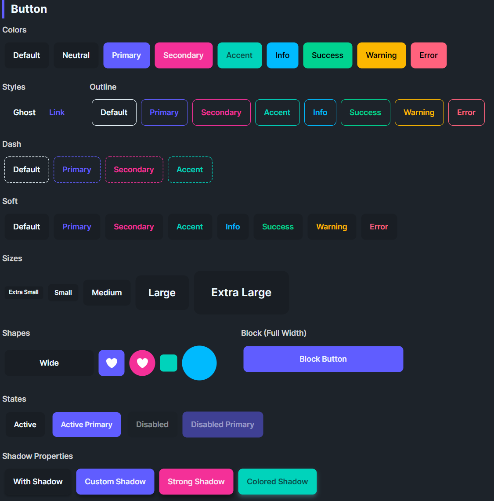

DaisyButton
Overview

DaisyButton delivers DaisyUI-styled actions with 11 color variants, 4 visual styles, 5 sizes, and shape modifiers for wide, block, square, or circular buttons. It supports active state scaling, optional shadows, and link/ghost modes for text-like actions. Use it for everything from primary calls-to-action to subtle icon buttons.
Variant Options
| Variant |
Description |
| Default / Neutral |
Base theme fill; balanced emphasis for most actions. |
| Primary |
High-emphasis brand color for main actions. |
| Secondary |
Alternate brand color for secondary actions. |
| Accent |
Highlight color for standout actions. |
| Info / Success / Warning / Error |
Semantic colors for status-driven actions. |
| Ghost |
Transparent background with subtle hover fill; minimal weight. |
| Link |
Text-like button: no padding/border, uses primary color and underline on hover. |
Style Options
| Style |
Description |
| Default |
Solid fill (or transparent for Ghost/Link) with hover transitions. |
| Outline |
Transparent background with colored border/text; fills with the variant color on hover. |
| Dash |
Dashed stroke around the button (shown via a dashed rectangle) with transparent fill until hover. |
| Soft |
Tinted background with colored text; hover deepens the tint. |
IsOutline (obsolete) |
Legacy flag; prefer ButtonStyle="Outline". |
Shape Options
| Shape |
Description |
| Default |
Standard pill rounding (8px). |
| Wide |
Extra horizontal padding for prominent CTAs. |
| Block |
Stretches to parent width (HorizontalAlignment=Stretch). |
| Square |
Fixed width per size; good for icon-only buttons. |
| Circle |
Fully rounded; fixed width per size; icon-friendly. |
Size Options
| Size |
Height |
Padding |
Typical Use |
| ExtraSmall |
24px |
8px horizontal |
Dense toolbars, icon circles. |
| Small |
32px |
12px horizontal |
Compact forms, secondary actions. |
| Medium (default) |
48px |
16px horizontal |
General purpose. |
| Large |
64px |
24px horizontal |
Hero sections, primary CTAs. |
| ExtraLarge |
80px |
32px horizontal |
Splash/marketing layouts. |
NOTE
DaisyButton uses
fixed heights (not MinHeight) for each size to match DaisyUI's design. Buttons will not grow vertically to accommodate multi-line content. If you need a flexible-height button, override
Height="NaN" on the individual button.
Shadows & States
| Property |
Description |
IsActive=True |
Applies a 0.95 scale to simulate pressed/active state. |
ShowShadow |
Enables box shadow; customize with ShadowOffsetX, ShadowOffsetY, ShadowBlur, ShadowColor. |
IsEnabled=False |
Lowers opacity and removes hand cursor for disabled state. |
Quick Examples
<!-- Primary CTA -->
<controls:DaisyButton Content="Get Started" Variant="Primary" />
<!-- Outline and soft styles -->
<controls:DaisyButton Content="Secondary" Variant="Secondary" ButtonStyle="Outline" />
<controls:DaisyButton Content="Soft Accent" Variant="Accent" ButtonStyle="Soft" />
<!-- Ghost and link -->
<controls:DaisyButton Content="Ghost Action" Variant="Ghost" />
<controls:DaisyButton Content="Learn more" Variant="Link" />
<!-- Shapes -->
<controls:DaisyButton Content="Wide CTA" Variant="Primary" Shape="Wide" />
<controls:DaisyButton Shape="Square" Variant="Primary" Size="Small">
<PathIcon Data="{StaticResource DaisyIconSettings}" Width="16" Height="16" />
</controls:DaisyButton>
<controls:DaisyButton Shape="Circle" Variant="Secondary" Size="Large">
<PathIcon Data="{StaticResource DaisyIconPlay}" Width="18" Height="18" />
</controls:DaisyButton>
<!-- Shadows and active states -->
<controls:DaisyButton Content="With Shadow" ShowShadow="True" />
<controls:DaisyButton Content="Active" Variant="Primary" IsActive="True" />
<controls:DaisyButton Content="Custom Shadow" Variant="Accent" ShowShadow="True"
ShadowOffsetX="2" ShadowOffsetY="8" ShadowBlur="12"
ShadowColor="#332196F3" />
Keyboard Mnemonics
String content shows WinForms-style mnemonics: & underlines the access character and && is a literal &. Content keeps the markers. While Content is a string that contains & and no ContentTemplate is set, the button shows it through FloweryMnemonicHelpers.StringContentTemplate; your own ContentTemplate takes precedence. It is display only, so handle Alt+key in your app. See DaisyMnemonicText.
<controls:DaisyButton Content="&Save" Variant="Primary" />
<controls:DaisyButton Content="Save && Exit" />
Tips & Best Practices
- Use Primary for the single most important action; reserve Secondary/Accent for supporting actions.
- Prefer Ghost or Link for non-blocking, inline actions to reduce visual noise.
- Outline and Dash styles shine on colored backgrounds where solid fills would clash.
- Match size/shape to context: Square/Circle for icons, Wide for promotional CTAs, Block for full-width forms.
- Keep shadow subtle; large blur/offset can look heavy - start with
ShowShadow=True defaults before customizing.
- Buttons have fixed heights by design. For flexible-height buttons with wrapping text, set
Height="NaN" to allow vertical growth.